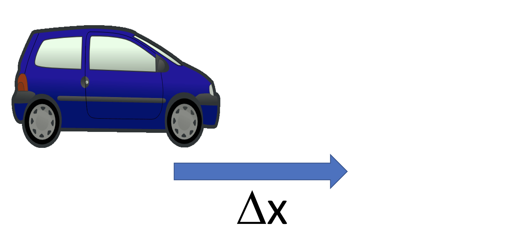
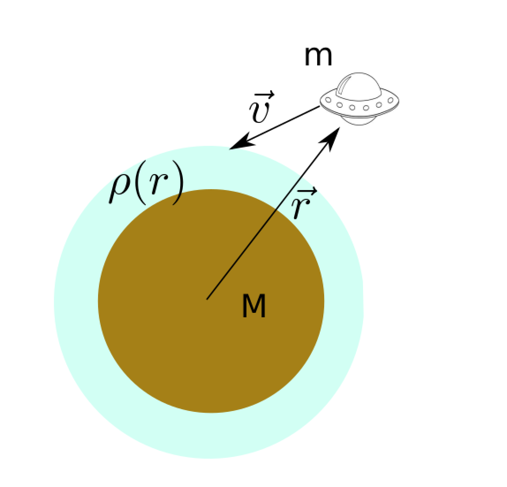
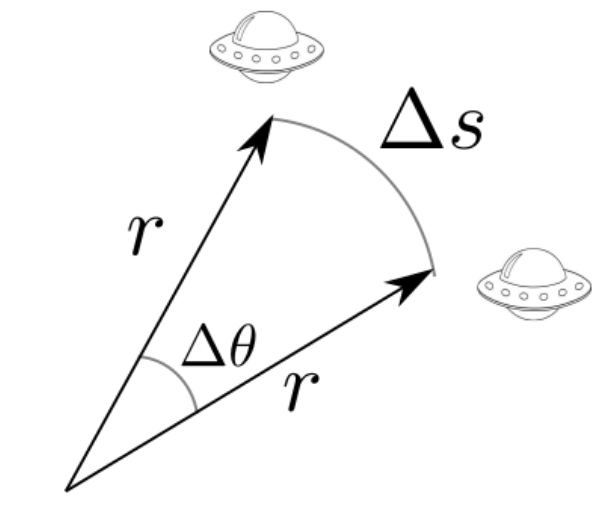
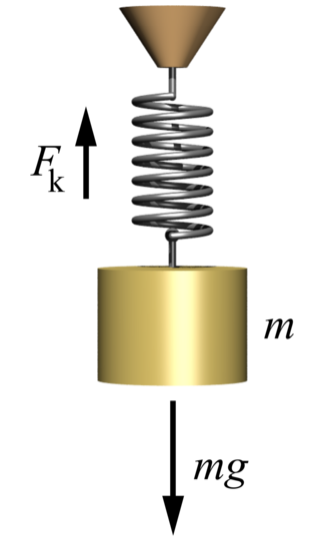

Dette er et alternativ til forelesningen i emnet. Har du gått skikkelig gjennom disse interaktive forelesningsnotatene så trenger du ikke å lese de fulle forelesningsnotatene (med unntak av oppgavene bak). All informasjonen du trenger, får du her. Du kommer til å få mange grublespørsmål og diskusjonsoppgaver, det er meningen at disse skal gjøres i grupper av minst 2, maks 4 studenter. Det er defor sterkt anbefalt at dere sitter sammen i grupper når dere går gjennom disse interaktive forelesningsnotatene, du vil få betydelig mer utbytte av dem på den måten. Hvis du har kommentarer ris/ros til disse forelesningsnotatene eller til emnet, trykk på 🙂 🙁 knappen som du finner på alle sider.
HUSK at du får mer ut av de interaktive forelesningsnotatene når du gjør de sammen med noen. Diskusjonene med andre er svært viktige.
Det er mange spørsmål/grubliser underveis, sett dere selv en tidsgrense, 1 minutt på de korte, maks 4-5 minutter på de lenger. Ha en alarm ved siden av, ellers kommer dere til å bruke alt for langt tid. Har dere ikke fått det til etter kort tid, gå videre, se svaret og lær!
Er du i det minste tvil om noe, så finnes det en FORUMknapp, trykk det og still spørsmål med en gang mens du enda husker spørsmålet!
Forrige side
Velkommen til del 1B! Etter at du har skutt raketten din ut i rommet, så skal vi i denne delen beregne banen til både romfartøyet ditt og planeten som du skal besøke. Vi skal se på både analytiske og numeriske baneberegninger og prøve å forstå hva som avgjør banen til et objekt. Vi skal, kun ved å ta utgangspunkt i Newtons lover, utlede analytisk at planeter går i ellipsebaner, og se at det faktisk også finnes andre baner. Numerisk baneberegning har du kanskje gjort før med Eulers metode. Det blir litt repetisjon før vi tar det videre. Er du klar? Dette forelesningsnotatet tilsvarer en og en halv fysisk dobbelttime, og kanskje litt mer Neste side
Forrige side🙂 🙁IntroduksjonFORUM
Oppgave 1B8 som er en av innleveringsoppgavene går ut på å myklande en romsonde på en planet med atmosfære som illustert i figuren. I løpet av dette forelesningsnotatet vil du lære det du trenger for å løse denne oppgaven og mer til. Men før vi setter igang så skal vi varme opp litt med å fort sjekke at vi har kunnskapen fra del 1A på plass, samt se hva du allerede kan om temaene i del 1B. Trykk her for å varme opp
Har du varmet opp? Er du svett og klar til å starte kampen? ...og sendt inn skjemaet? NeiJa
Forrige side🙂 🙁Numerisk løsningFORUM
La oss begynne med beina godt plantet på jorda. Og med litt veldig grunnleggende videregåendeskole-fysikk (sorry!). 
I figuren ser du en bil som beveger seg med konstant hastighet v. Hvilken avstand Δx har denne bilen beveget seg i løpet av tiden Δt? Trykk her når du har svaret!
Forrige side🙂 🙁Numerisk løsningFORUM
La oss begynne med beina godt plantet på jorda. Og med litt veldig grunnleggende videregåendeskole-fysikk (sorry!).
I figuren ser du en bil som beveger seg med konstant hastighet v. Hvilken avstand Δx har denne bilen beveget seg i løpet av tiden Δt? Ganske riktig ja, strekning er hastighet ganger tid, dermed er Δx = vΔt. Neste side
Forrige side🙂 🙁Numerisk løsningFORUM
Nå har vi samme situasjon en gang til, men med vektorer. En romskip har posisjonsvektor r⃗. Vi skal i resten av dette emnet bruke konseptet posisjonsvektor ganske mye. 
En posisjonsvektor... ... er en vektor som peker fra origo i koordinatsystemet ditt til den posisjonen der objektet du studerer er. Når objektet endrer posisjon så endrer også posisjonsvektoren seg tilsvarende slik at den alltid peker på objektets posisjon.
I figuren ser du dermed at vi har satt origo i sentrum av planeten. Romskipet har hastighetsvektor v⃗. Hva er forflytningen Δr⃗ (altså endringsvektoren til posisjonsvektoren) som romskipet får i løpet av tid Δt? Trykk her når du har svaret!
Forrige side🙂 🙁Numerisk løsningFORUM
Nå har vi samme situasjon en gang til, men med vektorer. En romskip har posisjonsvektor r⃗. Vi skal i resten av dette emnet bruke konseptet posisjonsvektor ganske mye.
En posisjonsvektor... ... er en vektor som peker fra origo i koordinatsystemet ditt til den posisjonen der objektet du studerer er. Når objektet endrer posisjon så endrer også posisjonsvektoren seg tilsvarende slik at den alltid peker på objektets posisjon.
I figuren ser du dermed at vi har satt origo i sentrum av planeten. Romskipet har hastighetsvektor v⃗. Hva er forflytningen Δr⃗ som romskipet får i løpet av tid Δt? Ganske riktig ja, strekningsvektor er hastighetsvektor ganger tid, dermed er Δr⃗ = v⃗Δt. Neste side
Forrige side🙂 🙁Numerisk løsningFORUM
Vi fant at forflytningen er Δr⃗ = v⃗Δt. Hvis vi kaller opprinnelig posisjon for r⃗0 og ny poisjon for r⃗1, så har vi altså: r⃗1 = r⃗0 + v⃗Δt noe du sikkert kjenner som Eulers metode? Du har i tidligere emner brukt Eulers metode numerisk. La oss se på hastighetsendring på samme måte:
Vi vet at akselerasjon er endring i hastighet per tid, slik at hvis du har en konstant akselerasjon a⃗, så vil endring i hastighet i løpet av tid Δt per definisjon være gitt ved Δv⃗ = a⃗Δt Hvis opprinnelig hastighet var v⃗0 og ny hastighet er v⃗1 så har vi v⃗1 = v⃗0 + a⃗Δt ... og dermed har vi Eulers metode for å oppdatere hastigheten også! Neste side
Forrige side🙂 🙁Numerisk løsningFORUM
Dette var repetisjon, men kanskje en mer fysisk måte å utlede det på enn du er vant til? Det er viktig å forstå de fysiske prinsippene bak når vi nå etterhvert skal ta dette videre.
Numerisk beregning av forflytning og hastighetsendring... Når du gjør dette numerisk, husk også at det er mer nøyaktig å bruke Euler-Cromers metode, dvs. at du oppdaterer posisjonen med den nye hastigheten, dvs. $$\begin{aligned}
\vec{v}_1 &= \vec{v}_0 + \vec{a}\Delta t\\
\vec{r}_1 &= \vec{r}_0 + \vec{v_1}\Delta t\end{aligned}$$
Forrige side🙂 🙁Numerisk løsningFORUM
Merk at det du har gjort her matematisk er jo å løse likningssystemene $$\frac{d\vec{r}}{dt}=\vec{v}\ \ \ \ \ \frac{d\vec{v}}{dt}=\vec{a}$$(disse likningssystemene er jo bare definisjonene av hastighet og akselrasjon, ser du det?) Du kommer frem til samme resultat hvis vi gjør de infinitsimale størrelsene endelige (men fortsatt små) ved å kalle dt for Δt, etc: $$\frac{\Delta\vec{r}}{\Delta t}=\vec{v}\ \ \ \ \ \frac{\Delta\vec{v}}{\Delta t}=\vec{a}$$ Hvis du ganger opp med Δt på begge sider av likningene her, så ender du igjen opp med det samme som på de forrige slidene. Merk deg denne måten å tenkte på da du vil bruke den til å løse andre typer differensiallilkninger senere. Da er repetisjonen over, nå begynner moroa her... Neste side
Forrige side🙂 🙁Forberede 2-legemeproblem: enhetsvektorerFORUM
Det vi har gjort så langt er å se hvordan vi kan finne romskipets bevegelse numerisk, steg for steg. Nå skal vi se på hvordan dette kan gjøres analytisk. Det er viktig å gjøre ting analytisk der det kan gjøres analytisk fordi du da kan gjøre ting mye raskere på datamaskin og samtidig få en mye dypere innsikt i fysikken bak. Og ikke minst, det er jo litt kult å faktisk ha utledet at planeter har ellipsebaner helt fra scratch?
Utledningen av løsningen på dette 2-legemeproblemet (og det er kun for 2 legemer at vi kan løse dette analytisk) er en ganske omfattende utledning, men på veien dit kommer vi innom mange temaer som vi skal bruke igjen og igjen i løpet av kurset, så det er viktig å forstå detaljene her.
Trenger du en pause, så ta den nå! Trekk pusten godt! Er du klar?Ja, kom igjen!Tjjjaaaaa....
Forrige side🙂 🙁Forberede 2-legemeproblem: enhetsvektorerFORUM
Se det, det var riktig instilling ja! Moroa begynner på ... .. neste side
Forrige side🙂 🙁
Forberede 2-legemeproblem: enhetsvektorer
Før vi begynner på selve utledningen så må vi innom et par småting som forberedelse til utledningen, la oss begynne med koordinatsystemer og enhetsvektorer.
Her ser du posisjonsvektoren r⃗ til romskipet samt enhetsvektorene e⃗x og e⃗y. Dette er de samme enhetsvektorene som du kaller for i⃗ og j⃗ i andre fag. (vi bruker andre navn på dem her for å skape litt forvirring)
Se for øyeblikket bort ifra andre ting på figuren. Vi starter med litt oppvarming igjen. Vi skal skrive posisjonsvektoren r⃗ ved hjelp av enhetsvektorene r⃗ = ae⃗x + be⃗y Hva er a og b her? a = 1 b = 1a = 3 b = 2a = 2 b = 3a = 0 b = 0
Forrige side🙂 🙁Forberede 2-legemeproblem: enhetsvektorerFORUM Det ble galt! Er du sikker på at du forstår hva det spørres om? Innser du at a og b her er x- og y-komponentene til vektoren r⃗? Det er helt essensielt at du forstår dette før du går videre. Spør gruppelærer eller foreleser hvis du har den minste tvil. Gå tilbake og forsikre deg om at du forstår før du går videre!
Forrige side🙂 🙁Forberede 2-legemeproblem: enhetsvektorerFORUM STEMMER!.Vi ser på figuren igjen:
Ser du at det er tegnet inn to andre enhetsvektorer e⃗r og e⃗θ? Dette er enhetsvektorer som fortsatt har lengde 1, men som peker langsr⃗ og ortogonalt med r⃗.
Merk at hvis f.eks. romskipet har en positiv hastighetskomponent langs e⃗θ så vil vinkelen θ øke med tiden.
‘ Vi kan altså representere vektoren r⃗ med enten x-y enhetsvektorer eller r-θ enhetsvektorer (nå ser du kanskje at det nye navnet på i⃗ og j⃗ faktisk ikke var for å forvirre deg, men har en mening!)
Du kan dermed representere en vektor enten med komponentene langs x-y enhetsvektorene eller med komponentene langs r-θ enhetsvektorene. Ved første øyesyn kan det kanskje virke som at det er likegyldig hvilket av systemene du velger, men det er en stor grunnleggende forskjell mellom disse to koordinatsystemene. Hvilken? Tenk deg godt om før du går til neste side der svaret står!Neste side
Forrige side🙂 🙁Forberede 2-legemeproblem: enhetsvektorerFORUM
Et lite hint før du får svaret: Hva skjer med enhetsvektorene dersom romskipet beveger seg? Er det en grunnleggende forskjell mellom x-y-enhetsvektorene og r-θ-enhetsvektorene da? Tenk deg om og ...trykk her
Ganske riktig! r-θ-enhetsvektorene endrer seg med tiden når objektet de peker på endrer posisjon! De er tidsavhengige enhetsvektorer, mens x-y-enhetsvektorene ikke endrer seg. Men dette gjør det vel mer komplisert å bruke r-θ-enhetsvektorene? Hva iallverden skal vi med disse da? Kan du tenkte deg noen fordeler med dem? Tenk deg godt om før du går til ... ... neste side
Forrige side🙂 🙁Forberede 2-legemeproblem: enhetsvektorerFORUM Det ble galt! Husk at r-θ-koordinatsystemet funker helt på samme måte som x-y, altså du dekomponerer vektoren i de to enhetsvektorene. Dvs. $$\begin{aligned}
a &= \vec{r}\cdot\vec{e}_r\\
b &= \vec{r}\cdot\vec{e}_\theta\end{aligned}$$ Hjelper det deg? Prøv igjen med dette som utgangspunkt!
Forrige side🙂 🙁Forberede 2-legemeproblem: enhetsvektorerFORUM STEMMER!.Vi ser på figuren igjen:
Poisjonsvektoren har altså kun en komponent som går langs e⃗r, ingen som går ortogonalt. Hvis vi tenker litt på det så er det egentlig opplagt siden e⃗r er definert fra r⃗.
Forrige side🙂 🙁Forberede 2-legemeproblem: vektorregningFORUM
Det vi fant er altså at posisjonsvektoren kan skrives som r⃗ = re⃗r der r = |r⃗|. Enig?
Hvis du tar utgangspunkt i dette, hvordan vil du nå gå frem for å finne hastighetsvektoren v⃗ til romskipet, gitt at du kjenner r(t) og θ(t)? MERK: Det er ikke meningen at du skal regne ut hastighetsvektoren riktig enda, kun tenke gjennom hvordan du vil gå frem for å gjøre det!
Har du tenkt nøye gjennom hvordan du kunne tenke deg å gjøre det? Har du en ide? (tenk i maks 2-3 minutter) Ja, jeg tror det! tjaaaaa, et bittelite hint kanskje?
Forrige side🙂 🙁Forberede 2-legemeproblem: vektorregningFORUM
Hint skal bli:
Hva er definisjonen av hastighet? Den med en derivert?
Forrige side🙂 🙁Forberede 2-legemeproblem: vektorregningFORUM
Var det noe alla: $$\vec{v}=\frac{d\vec{r}}{dt}$$ du tenkte på?
Hvordan går du videre her? (vi lærte vel akkurat hvordan uttrykke r⃗ med enhetsvektorer...) Har du en ide?
$$\vec{v}=\frac{d}{dt}(r\vec{e}_r)=\dot r\vec{e}_r+r\frac{d}{dt}\vec{e}_r$$Merk at vi skriver tidsderivert som en prikk over, dvs $$\dot r = \frac{dr}{dt}$$ Dette skal vi bruke mye i resten av kurset, så lær deg dette med en gang!
Forrige side🙂 🙁Forberede 2-legemeproblem: vektorregningFORUM
Vi har altså: $$\vec{v}=\frac{d}{dt}(r\vec{e}_r)=\dot r\vec{e}_r+r\frac{d}{dt}\vec{e}_r$$ Der vi trenger å finne den tidsderiverte av enhetsvektoren!. Dette er litt uvant, vanligvis er enhetsvektorer faste størrelser.
Grublis Hvordan kan du går frem for å finne den tidsderiverte av enhetsvektoren e⃗r??? Du kan uttrykke svaret med de tidsderiverte, ṙ og θ̇ samt enhetsvektorer.
Forrige side🙂 🙁Forberede 2-legemeproblem: vektorregningFORUM
Første steg kan være å uttrykke e⃗r med faste enhetsvektorer som e⃗x og e⃗y. La oss bruke denne figuren:
Hvis vi nå skal skrive e⃗r = ae⃗x + be⃗y Hva er a og b? Tenk deg litt om, før du ... ... trykker her for noen alternativer
Forrige side🙂 🙁Forberede 2-legemeproblem: vektorregningFORUM Det ble galt! Husk at alt du gjør er å dekomponere e⃗r ned på x- og y-aksene. Husk også at lengden av e⃗r er 1. Hvis du har en hvilken som helst vektor med kjent lengde og du skal finne x- og y-komponentene, hva gjør du vanligvis?
Prøv å ha dette i tankene når du nå går tilbake og gjør et nytt forsøk.
Hvis du ikke forstår dette, ta kontakt med gruppelærer eller foreleser!
Forrige side🙂 🙁Forberede 2-legemeproblem: vektorregningFORUM Det ble galt! Hint: $$\frac{d}{dt}(\cos{\theta}) = -\dot\theta\sin{\theta}$$ Forsikre deg om at du forstår hvordan du kommer frem til dette, spør hvis du trenger! Et hint til: sammenlikn svaret ditt med formen på e⃗θ. Gå tilbake og prøv igjen, hvis du sliter med å forstå, kontakt foreleser/gruppelærer.
Forrige side🙂 🙁Forberede 2-legemeproblem: vr og vθFORUM Det er helt riktig. Vi har altså $$\dot{\vec{e}}_r = \dot\theta\vec{e}_\theta$$ Helt samme resonnement gir $$\dot{\vec{e}}_\theta = -\dot\theta\vec{e}_r$$ Denne siste får du bruk for senere. Tilbake til hastigheten. Prøv nå å vise at v⃗ = ṙe⃗r + rθ̇e⃗θ Hvis du ikke får dette til etter å ha prøvd flere ganger, ta en titt på denne videoen her. (fikk du det til, ikke kast bort tiden på videoen!) Neste side
Forrige side🙂 🙁Forberede 2-legemeproblem: vr og vθFORUM
La oss prøve å tolke uttrykket for hastighet v⃗ = ṙe⃗r + rθ̇e⃗θ I denne videoen tolker vi de to hastighetskomponentene og du lærer noen svært viktige nye begreper som skal brukes gjennom hele kurset. Neste side
Forrige side🙂 🙁Forberede 2-legemeproblem: vr og vθFORUM Har du nå klart for deg hva radiell og tangensiell hastighet er for noe?
La oss se om vi kan utlede uttrykket for tangensiell hastighet, altså vθ = rθ̇, en gang til, men nå med litt geometri og rent fysiske argumenter isteden. Vi skal bruke denne figuren her  som viser en liten forflytning Δs av romskipet i retning av enhetsvektoren e⃗θ. Det er altså en forflytning ortogonalt på posisjonsvektoren som skjer i løpet av et kort tidsrom Δt. Hvordan kan du bruke disse to størrelsene til å definere vθ, og hvordan kan du skrive Δs uttrykt med r og Δθ?Neste side
Forrige side🙂 🙁Forberede 2-legemeproblem: angulærmomentFORUM
Hvis du har tenkt deg nøye om, se på denne videoen her for en forklaring. Bruk nå uttrykket du har funnet for vθ til å vise at spinn (angulærmoment) per masse for romskipet, h, er gitt ved h = r2θ̇. Spinn per masse er definert som $$\vec{h}=\frac{\vec{r}\times\vec{p}}{m}$$ der p⃗ = mv⃗ er bevegelsesmengden til romskipet og m er massen. Denne størrelsen skal vi bruke mye fremover. Hvis du har forstått alt vi har gått gjennom frem til nå, så bør du få til å vise at h = r2θ̇ (bruk uttrykket vi har funnet for v⃗). Hvis ikke, så er det svært viktig at du kontakter foreleser eller gruppelærer for hjelp før du går videre! Neste side
Forrige side🙂 🙁Keplers loverFORUM
Nå begynner vi å nærme oss den analytiske utledning av baner her, men før i setter igang, har du hørt om Keplers lover? JA!NEI!
Da husker du kanskje også omtrent hva Keplers lover sier? Tenk deg godt om før du går videre!!! Få se Keplers lover da vel!
Planetene går i ellipsebaner med sola i det ene brennpunktet
En linje fra sola til planeten sveiper ut like store areler i løpet av like store tidsrom
Omløpsperioden (gitt i jordår) i annen potens er lik store halvakse i ellipsebanen (gitt i AU) i tredje potens, P2 = a3.
Se gjerne denne videoen hvis du er usikker på hva lovene sier. Hvis du allerede vet, ikke kast bort tid på videoen.Neste side
Forrige side🙂 🙁Keplers loverFORUM Merket du deg forresten en viktig ting på forrige side og i videoen? I astrofysikken bruker vi enheten AU (Astronomial Unit), astronomiske enheter, veldig mye så lær deg med en gang hva denne betyr:
Astronomisk enhet (AU)Er middelavstanden mellom sola og jorda, ca. 150 millioner km!
Forrige side🙂 🙁EllipserFORUM
I tillegg til halvaksene bør du kjenne til begrepet brennpunkt. Denne er markert med massen m1 på figuren. En ellipse har to brennpunkter, begge ligger i en avstand ae fra sentrum langs store halvakse. Størrelsen e kaller vi eksentrisiteten og sier noe om hvor avlang ellipsen er. Neste side
Forrige side🙂 🙁EllipserFORUM Sammenhengen mellom eksentrisiteten og lille og store halvakse er gitt ved $$e=\sqrt{1-\left(\frac{b}{a}\right)^2}$$ Vi ser at hvis vi har en sirkel så må store og lille halvakse være like store, a = b, og da ser vi fra denne formelen at e = 0. Hvis derimot a er mye større enn b så har vi en veldig avlang ellipse og da gir formelen oss at eksentrisiteten er veldig stor, e → 1. Eksentrisiteten er alltid e < 1. Neste side
Forrige side🙂 🙁EllipserFORUM
Når vi snakker om ellipsebanene i Keplers første lov, enten det gjelder planetenes baner rundt sola eller en satelitts bane rundt en planet, så ligger altså den ene massen m1 i brennpunktet og den andre massen m2 går i ellipsebane rundt. Det er noen ord til som du må lære her: periapsis er punktet i ellipsebanen der objektene er nærmest hverandre og apoapsis er punktet i ellipsebanen der de er lengst fra hverandre. For en planets bane rund sola så brukes ordene perihel og aphel isteden.
Forrige side🙂 🙁EllipserFORUM En liten ting til om ellipser. I polarkoordinater kan du skrive ellipseformelen på denne måten (hvis du er interessert i hvordan du går fra uttrykket i xy-koordinater til polarkoordinater, så ta en kikk i de vanlige forelesningsnotatene, det er ikke pensum): $$r(f)=\frac{a(1-e^2)}{1+e\cos{f}}$$ der r(f) er lengden av vektoren r⃗ i figuren, altså avstanden fra brennpunktet til objekt m2 og vinkelen f er definert som vinkelen mellom r⃗ og vektoren som går fra brennpunktet i m1 til perihel. Hvis vi setter inn f = 0 her hva får du da for lengden r? Stemmer det overens med det du ser geometrisk på figuren? Og hva med f = π? (hint: avstand fra sentrum til brennpunkt er ae.) Neste side
Forrige side🙂 🙁Løse 2-legemeproblemetFORUM
Vi skal i det følgende løse det som vi kaller 2-legeme-problemet: To legemer med masse m1 og m2 påvirker hverandre kun med gravitasjonskrefter. Det virker ingen eksterne krefter. Initialposisjonene og initialhastighetene til begge legemene er kjent. For å gjøre utledningen enklere skal vi først sette oss på m1 og utlede bevegelsen til m2 sett ifra m1. Dermed trenger vi kun å se på bevegelsen til et legeme. Etter det skal vi se på bevegelsene til begge legemene.
På figuren ser du at vektoren r⃗ peker fra m1 til m2. Når vi setter oss på m1 og definerer origo der, så er denne r⃗ altså poisjonsvektoren til m2. Når vi har funnet hvordan r⃗(t) endrer seg som funksjon av tiden så har vi løst 2-legeme-problemet sett fra objekt m1.Neste side
Forrige side🙂 🙁Løse 2-legemeproblemetFORUM
I denne videoen begynner vi utledningen av løsningen på 2-legemeproblemt. Vi diskuterer krefter på objektene og bruker Newtons lover inkludert gravitasjonsloven til å komme frem til $$\ddot{\vec{r}}+m\frac{\vec{r}}{r^3}=0$$ der vi har definert m = G(m1+m2) og r = |r⃗| der r⃗ peker fra masse m1 til masse m2.
Dette bevegelseslikningen for systemet vårt. Det er en differensiallikning i funksjonen r⃗(t). Hvis vi klarer å løse for r⃗(t), har vi funnet bevegelsen til m2 i forhold til m1 og dermed løst 2-legemeproblemet sett ifra m1. Neste side
Forrige side🙂 🙁Løse 2-legemeproblemetFORUM For å kunne løse denne likningen, så trenger vi å innføre enhetsvektorer. Det viser seg at det er lettere å jobbe med e⃗r og e⃗θ her! Ta en titt på denne figuren:
Vi har nå definert origo i sentrum av m1 slik at r⃗ er en posisjonsvektor som peker på m2. Sett inn enhetsvektorer, deriver og dobbeltderiver r⃗ og se om du klarer å komme frem til: (hint: gå baklengs fra dette svaret for å sammenlikne!)$$(\ddot{r}-r\dot{\theta}^2)\vec{e}_r+\frac{1}{r}\frac{d}{dt}(r^2\dot{\theta})\vec{e}_\theta=-\frac{m}{r^2}\vec{e}_r.$$ Flere hint: start fra uttryket for $\dot{\vec{r}}$ og husk at $\dot{\vec{e}}_r = \dot\theta\vec{e}_\theta$ og $\dot{\vec{e}}_\theta = -\dot\theta\vec{e}_r$. Hvis du ikke får det til, ta en titt på denne videoen her , men kun når du har gjort et skikkelig forsøk selv!.Neste side (Feil i videoen: det står r3 under brøkstreken på høyre side, det skal være r2 som i likningen rett over)
Forrige side🙂 🙁Løse 2-legemeproblemetFORUM $$(\ddot{r}-r\dot{\theta}^2)\vec{e}_r+\frac{1}{r}\frac{d}{dt}(r^2\dot{\theta})\vec{e}_\theta=-\frac{m}{r^2}\vec{e}_r.$$ Se nøye på denne likningen! Se om du kan bruke den til å trekke følgende konklusjoner:
Vi har gjort om vektorlikningen til to skalare likninger som sier:
Vi har utledet at spinn per masse (h) er en bevart størrelse.
Vi har kommet til at $$\ddot{r}-r\dot{\theta}^2=-\frac{m}{r^2}$$
Hvis du ikke ser hvordan vi kommer frem til dette, så kikk på denne videoen . Neste side
Forrige side🙂 🙁Løse 2-legemeproblemetFORUM
Nå nærmer vi oss slutten her!
Vi skal nå gjøre to steg:
vi skal bruke θ som variabel isteden for tiden t. Hvis vi kun er interessert i formen på banen og ikke hvor objektet er til en gitt tid, så holder det å få ut svaret r(θ), dvs. hva er lengden av r⃗ når vinkelen som vektoren danner med x-aksen er θ? Vi skal altså ha deriverte i forhold til θ isteden for tiden.
For å gjøre det enklere å løse likningen, så viser det seg at det er bedre å definere $u(\theta)=\frac{1}{r(\theta)}$ og substituerer u overalt der det er r. Vi løser for u(θ) og til slutt setter vi inn for r igjen.
Du skal nå få prøve deg litt selv, før du får svaret... Neste side
Forrige side🙂 🙁Løse 2-legemeproblemetFORUM Den delen av utledningen som står på denne siden er ikke superviktig, du kommer ikke til å bli spurt om dette i oppgavene eller på eksamen. Men det er kult å ha sett det en gang. Gå gjerne fort gjennom hvis du ikke er interessert. Deriver u med hensyn på θ, bruk kjerneregel til å forbinde denne med ṙ og se om du klarer å få: $$\frac{du(\theta)}{d\theta}=-\frac{\dot r}{h}$$ der h er spinn per masse. Og deriverer du en gang til skal du få: $$\frac{d^2u(\theta)}{d\theta^2}=-\frac{\ddot r}{h\dot\theta}$$ Hvis du nå setter inn $\ddot r$ fra likningen vi fant over ($\ddot{r}-r\dot{\theta}^2=-\frac{m}{r^2}$), klarer du å få $$\frac{d^2u(\theta)}{d\theta^2}+u=\frac{m}{h^2}$$ Var disse stegene litt vanskelige? Det var meningen! Ikke bruk mye tid på dette, her er det mer matematisk triksing enn det er fysikk. HER finner du en video som forklarer det. Neste side
Forrige side🙂 🙁
Løse 2-legemeproblemet
Før vi går videre, la oss snakke om noe helt annet. Har du hørt om harmonisk oscillator?. Se på denne situasjonen:
 Hvis vi antar at vi har en x-akse som går nedover her, er du enig i at følgende likning beskriver x-posisjonen til loddet: $$F=ma=m\ddot x=-kx+mg$$ der m er massen til loddet, kx er fjærkraften som virker oppover, k er fjærkonstanten, jo større x er jo større er kraften, og mg er vanlig tyngdekraft (vi antar g konstant her). Hvis vi deler med m her og flytter over får vi:
$$\frac{d^2x}{dt^2}+\frac{k}{m}x=g$$ som er likningen for en harmonisk oscillator. Hvis vi setter k/m = 1 så ser vi at vi har nøyaktig samme type differensiallikning: $$\frac{d^2u(\theta)}{d\theta^2}+u=\frac{m}{h^2}$$ Dette er også en harmonisk oscillator. Neste side
Forrige side🙂 🙁Løse 2-legemeproblemetFORUM
Vi forstår at løsningen er oscillerende: loddet kommer til å svinge opp og ned ettersom tyngden drar det nedover og fjæren oppover så få vi en svingene bevegelse. Det samme må altså skje med u(θ), ettersom θ endrer seg så må u (og dermed r) bli større og mindre. Dette stemmer jo med en ellipse: planeten går fra perihel til aphel og dermed svinger r (avstanden til brenpunktet) mellom minste og største verdi, akkurat som loddet. Men kan du se en analytisk løsning av denne likningen?
Hvis du først setter konstanten lik 0 og flytter over på høyre side så står det: $$\frac{d^2u(\theta)}{d\theta^2}=-u$$ Ser du en løsning av denne likningen? Her har vi jo en funksjon u som er slik at hvis du deriverer den to ganger så får vi − u tilbake, hva må det være? Tenk deg godt om! Ikke trykk her før du har svaret!
Forrige side🙂 🙁Løse 2-legemeproblemetFORUM
Ganske riktig ja! En cosinus eller sinus er jo akkurat slik at hvis du deriverer den to ganger så få du tilbake minus funksjonen selv. Hva hvis vi nå tar med konstantleddet da. Hva blir løsningen av denne likningen?
Likningen for harmonisk oscillator for tolegemeproblemet$$\frac{d^2u(\theta)}{d\theta^2}+u=\frac{m}{h^2}$$
Forrige side🙂 🙁Løse 2-legemeproblemetFORUM
Hvis du har funnet en løsning, er du helt sikker på at du har funnet riktig løsning?. Før du går videre nå, ta din løsning u(θ) og dobbeltderiver den! Er svaret du får lik: $$\frac{m}{h^2}-u$$ ???
Helt sikker? Neste side
Da skulle du ha fått følgende svar: $$u(\theta)=\frac{m}{h^2}+A\cos{(\theta-\omega)}$$ hvor A og ω er integrasjonskonstanter. Ble det riktig?
Hvis vi nå omdøper integrasjonskontantene og gjør om til r(θ) ved r = 1/u så få vi da: $$r(f)=\frac{p}{1-e\cos{f}}$$ hvor vi har definert f = θ − ω, p = h2/m og e = Ap. MERK at p her ikke har noe med bevegelesmengde å gjøre! Ser du noe kjent med dette uttrykket? Kan du skrive det litt om for å få noe kjent? (MERK deg også definisjonen p = h2/m her, den kommer du til å bruke i neste forelesning!) Neste side
Forrige side🙂 🙁Løse 2-legemeproblemetFORUM HØØØØ!!DU!! Nå duppet du av litt, vi tar denne sliden EN gang til: her var det mange konstanter og greier, og lett å gå surr. Du trenger ikke huske alle disse konstantene, men du bør forstå hva som foregår her. Så les gjennom EN gang til og smak litt på ordene...
Da skulle du ha fått følgende svar: $$u(\theta)=\frac{m}{h^2}+A\cos{(\theta-\omega)}$$ hvor A og ω er integrasjonskonstanter. Ble det riktig?
Hvis vi nå omdøper integrasjonskontantene og gjør om til r(θ) ved r = 1/u så få vi da: $$r(f)=\frac{p}{1-e\cos{f}}$$ hvor vi har definert f = θ − ω, p = h2/m og e = Ap. MERK at p her ikke har noe med bevegelesmengde å gjøre! Ser du noe kjent med dette uttrykket? Kan du skrive det litt om for å få noe kjent? (MERK deg også definisjonen p = h2/m her, den kommer du til å bruke i neste forelesning!) Neste side
Forrige side🙂 🙁Løse 2-legemeproblemetFORUM
Ganske riktig ja! Hvis vi definerer en størrelse a slik at p = a(1−e2) så har vi jammen
Keplers første lov utledet fra Newtons lover Planetene går i ellipsebaner $$r(f)=\frac{a(1-e^2)}{1-e\cos{f}}$$ Der solen er i det ene brennpunktet
Dette er jo en generell løsning av 2-legemeproblemet og gjelder da for enhver banebevegelse. MEN, for ellipser så må e = [0, 1) men e kan aldri bli 1. I denne løsningen så kan e være en hvilken som helst positiv størrelse og enda være en løsning av likningen vår. Men hvis e ≥ 1 så har vi ikke en ellipse lenger! Betyr det at det finnes løsninger av tolegemeproblemet som ikke er ellipsebaner men andre typer baner? Som Kepler ikke visste noe om?? Fortsettelse følger...Neste side
Forrige side🙂 🙁... i den neste og meget spennende forelesningen i emnet AST2000... Følg med! Neste side
Forrige side🙂 🙁 Da er vi ved veis enda av den første forelesningen i del 1B. I den fysiske forelesningen er jeg kanskje litt over halvveis i den andre dobbelttimen på dette punktet. Du bør nå ha god oversikt over dette:
posisjonsvektorer, hastighetsvektorer, enhetsvektorer i polarkoordinater
hvordan derivere vektorer i polarkoordinater
størrelser og egenskaper til en ellipse
vite hva en harmonisk oscillator er
kjenne hovedtrekkene i hvordan man løser 2-legemeproblemet
Trykk nå gjerne på smilefjesene og si meninga di om dette interaktive forelesningsnotatet. Spesielt er jeg interessert i å vite hvor lang tid du brukte og da hva du brukte mest tid på! All ris og ros mottaes med takk for å vite om alt arbeidet med å lage disse interaktive slidene er verd det, om jeg bør fortsette med det og om det er noe jeg bør endre.